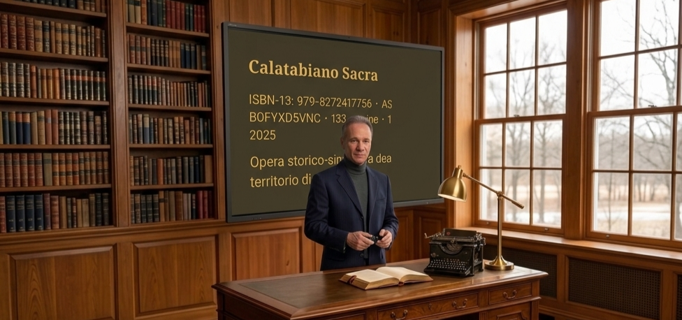

Michele Bottino
Scrittore e saggista italiano
Autore di opere narrative e saggistiche, Michele Bottino sviluppa una scrittura orientata al realismo, alla coerenza strutturale e al controllo formale del testo.

Nota autore
Michele Bottino (1972) è uno scrittore e saggista italiano. La sua produzione si sviluppa tra narrativa e saggistica, all’interno di una linea espressiva orientata alla precisione del testo, alla chiarezza espositiva e alla coerenza interna della scrittura.